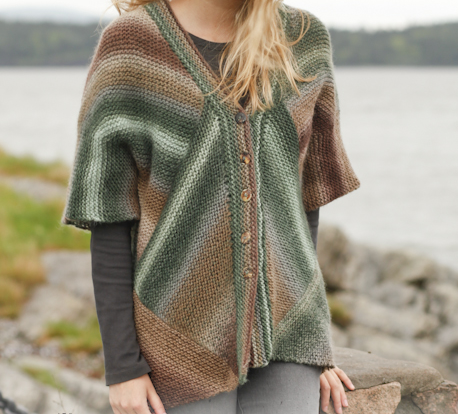

The goal of this small calculator is to tell you where to switch colours in a domino-knitting square. Let's pose the problem.
Suppose that a knitter is starting with X stitches in a row and that the decreases by 2 stitches every other row. On what row will the knitter reach half the total number of stitches in the square?
This is the kind of question that a mathematically minded knitter might ask when designing a domino knitting pattern. This program helps you find the half-way point.
Enter the number of stitches in your initial row into the box below.
Let's look at an example. Say you're starting wtih 59 stitches in your initial row (either cast on or picked up). This means your first 2 rows will have 59 stitches, totalling 118 stitches. Your next 2 rows will have 57 stitches, giving 118 + 114 = 232 stitches, and so on. If you keep adding up the stitches like this, you'll find that the total number of stitches in the square will be 1800.
Half this number is 900. The program tells us that on the 16th row you will hit your 900th stitch: the half-way point. If you want your square to have about equal numbers of stitches in two colours, you should change colours at the end of the 16th row.
Go ahead and try different row numbers to see where your half-way point is.
Enter the number of stitches in your initial row into the box below. If you are wondering how many stitches there are on your needle for this row, so you don't have to count rows, here's your answer: